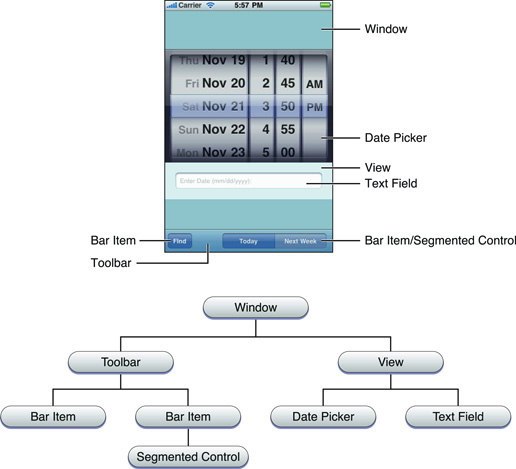
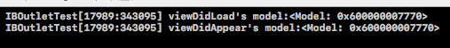
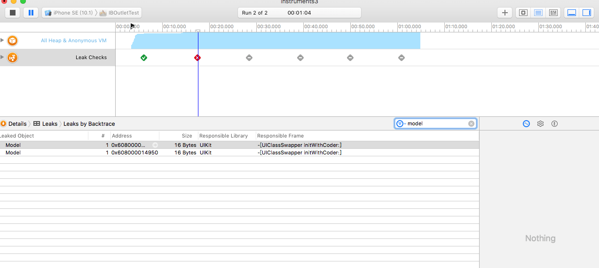
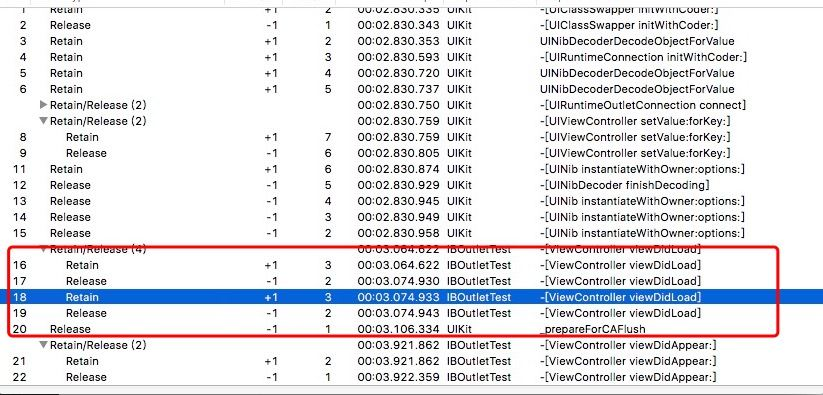

<!DOCTYPE html>
<html lang="en">
<head>
    <meta charset="UTF-8">
    <meta name="viewport" content="width=device-width" />
    <link rel="stylesheet" href="../../assets/css/main.css">
<link rel="stylesheet" href="../../libraries/font-awesome-4.7.0/css/font-awesome.min.css">

<script src="../../assets/js/main.js"></script>
    <title>IBOutlet为什么默认是weak的？到底应该设置成strong还是weak？</title>
</head>
<body>
<div class="social-media-menu">
        <span class="social-media-menu-frontpage">
            <a class="panel-social-jump-btn" href="../../" title="跳转至首页">
                <i class="fa fa-list"></i>
            </a>
        </span>
        <span class="social-media-menu-inner">
            <a class="panel-social-jump-btn" href="https://github.com/dark19940411" target="_blank">
                <i class="fa fa-github"></i>
            </a>
            <a class="panel-social-jump-btn" href="https://weibo.com/1950154683" target="_blank">
                <i class="fa fa-weibo"></i>
            </a>
        </span>
</div>

<script type="text/javascript">var cnzz_protocol = (("https:" == document.location.protocol) ? " https://" : " http://");document.write(unescape("%3Cspan id='cnzz_stat_icon_1271332019'%3E%3C/span%3E%3Cscript src='" + cnzz_protocol + "s22.cnzz.com/z_stat.php%3Fid%3D1271332019%26show%3Dpic1' type='text/javascript'%3E%3C/script%3E"));</script>
<script>document.getElementById('cnzz_stat_icon_1271332019').style.display = 'none';</script>

<header class="main-panel">
    <div class="main-panel-cover d-flex justify-content-center">
        <div class="panel-info-flow-table d-flex align-content-center align-items-center justify-content-center flex-column">
            <a href="../../" title="跳转至首页">
                
            </a>
            <div class="panel-name-label">Turtle</div>
            <div class="panel-subtitle">虽然慢，但是我有在爬呀</div>
            <hr class="panel-divider">
            <a class="panel-navi-item" href="../../" title="跳转至首页">首页</a>
            <div class="panel-social-container">
                <a class="panel-social-jump-btn" href="https://github.com/dark19940411" target="_blank">
                    <i class="fa fa-github fa-lg"></i>
                </a>
                <a class="panel-social-jump-btn" href="https://weibo.com/1950154683" target="_blank">
                    <i class="fa fa-weibo fa-lg"></i>
                </a>
            </div>
        </div>
    </div>
</header>
<div class="content-container">
    <div class="content-inner-wraper">
        <header>
            <time class="content-stamp">Wed Dec 07 2016 19:50:59 GMT+0800 (中国标准时间)</time>
            <h1>IBOutlet为什么默认是weak的？到底应该设置成strong还是weak？</h1>
        </header>
        <p>这个问题困扰了我许久了，于是今天我决定终结这个疑惑。<br>我谷歌了一下这个问题，于是在stackOverflow上看到了不同的答案，其中一个回答是说WWDC2015中的一个视频“Implementing UI Designs in Interface Builder”里的Apple工程师是这么说的：  </p>
<blockquote>
<p>And the last option I want to point out is the storage type, which can either be strong or weak. In general you should make your outlet strong, especially if you are connecting an outlet to a subview or to a constraint that&#39;s not always going to be retained by the view hierarchy. The only time you really need to make an outlet weak is if you have a custom view that references something back up the view hierarchy and in general that&#39;s not recommended.  </p>
</blockquote>
<p>大意就是一般来说你应该将outlet设为strong的，尤其是你在向一个不总会被视图层级所retained的子视图或者自动布局约束连接outlet的时候，你更应该将它设置为outlet。唯一需要将outlet设置为weak的时候就是你有一个自定义视图反向引用了视图层级的时候。<br>所以意思是，outlet一般推荐使用strong。  </p>
<p>然后我又跑去看了<a href="https://developer.apple.com/library/content/documentation/Cocoa/Conceptual/LoadingResources/CocoaNibs/CocoaNibs.html#//apple_ref/doc/uid/10000051i-CH4-SW6">官方Nib Files的文档</a>,上面是这么说的：</p>
<blockquote>
<p>From a practical perspective, in iOS and OS X outlets should be defined as declared properties. Outlets should generally be weak, except for those from File’s Owner to top-level objects in a nib file (or, in iOS, a storyboard scene) which should be strong. Outlets that you create should therefore typically be weak, because:</p>
</blockquote>
<blockquote>
<ul>
<li>Outlets that you create to subviews of a view controller’s view or a window controller’s window, for example, are arbitrary references between objects that do not imply ownership.  </li>
</ul>
</blockquote>
<blockquote>
<ul>
<li>The strong outlets are frequently specified by framework classes (for example, UIViewController’s view outlet, or NSWindowController’s window outlet).  </li>
</ul>
</blockquote>
<p>总结起来就是，一般来说load nib file获取到的对象都推荐使用弱引用，除了顶层的对象，因为没有父对象进行持有，所以不使用强引用进行持有的话，这时候outlet就会释放。<br>所以苹果工程师建议用strong，官方文档建议用weak？<br>什么鬼？？？<br>  </p>
<p>但是其实上面两段话并不冲突，苹果工程师认为视图层级不能长久持有某个子视图而推荐使用strong。但是官方文档给出的第一个原因也很好地解释了这个问题，<strong>“由于outlet之间的引用是随意的，并没有暗示outlet和对象之间的从属关系。”</strong>  举个简单的例子，假如我有一个customView内部有对controllerA的强引用，这时候我们再将这个customView的outlet拉到controllerA上，那么假如这个outlet是strong的话，是不是就循环引用了？是的。正是如此，为了防止这种情况的出现，所以苹果推荐outlet都使用weak引用。  </p>
<p>不过，看完这段话，我有了几个疑问：</p>
<ul>
<li>假定我的outlet是一个subview，我拖向了它所在的视图控制器，如果不是强引用的话，它被谁持有了呢？为什么在控制器使用它的时候没被释放？</li>
<li>什么是顶层对象？为什么顶层对象要用strong？</li>
<li>从上面我们可以知道outlet是可以为strong的，只是不推荐。那有什么时候outlet一定是要用weak的吗？</li>
</ul>
<hr>
<p>先来看第一个问题。<br>简单来说，这个weak的outlet其实是被视图层级（view hierarchy）所持有了。那什么是视图层级呢？让我们来看一种常见情况——假如你在viewDidLoad方法的作用域里创建里一个临时变量view，然后将它addSubview，等到方法执行结束后，却依然可以在对应的视图里看到这个view。这是为什么呢？唯一引用了这个view的临时变量不是被释放了吗？这个view对象不也应该被释放掉才对吗？
不不不，这时候，正是视图层级（view hierarchy）对它进行了引用。看了<a href="https://developer.apple.com/library/content/documentation/General/Conceptual/Devpedia-CocoaApp/View%20Hierarchy.html">官方文档解释view hierarchy</a>我们知道view hierarchy其实就是苹果将window和其下的子视图整合成的一颗颠倒树形结构。构建它的原因官方文档并没有说（但是其实估计就是为了保证视图们在屏幕上的显示吧，免得出现明明add了subview却被释放了而无法正常显示的情况）。<br>视图层级示意图：<br><br>视图层级引用链：Controller.view.subviews.subviews.......以此类推</p>
<hr>
<p>再来看第二个问题。<br>从官方文档里我们知道了，顶层对象通常在框架里出现。比如UIViewController所对应的view，那这个view就属于顶层对象，由于它除了controller以外没有父对象进行引用，所以它对应的outlet就应该是strong的。<br>基于这一点，我做了一些思考，觉得还有另外一种可能会产生出顶层对象，那按照这个套路，我自己也做了一个小实验——制造顶层对象。接下来请紧跟我的步伐：</p>
<ol>
<li>创建一个工程</li>
<li>创建一个叫Model的类</li>
<li>往Storyboard的首个ViewController拖入一个Object，将它的类设为Model（讲道理，这个Object应该就是一个顶层对象了，因为假如拖outlet到controller上的话，就只有controller作为它的父对象，因为view hierarchy也不会对这种非视图类进行引用。所以这就是一个顶层对象了是吧？好，初步认为它是，我们接着往下进行实验。）</li>
<li>拉一个Model对象的weak的outlet到controller上</li>
<li>在-viewDidLoad和-viewDidAppear里打出model的信息。</li>
<li>运行程序  </li>
</ol>
<p>让我们来看看结果：<br><br>So[冷漠脸], What the f**k is that? 讲道理这个outlet不是应该一初始化就会被释放了吗？为什么？？？无法理解啊<br>而在拖取这个outlet的时候默认引用属性也像意料之中的变成了strong，但是为什么结果却是这样子的啊？
好吧，到了这里我已经没辙了。我这个model并不是一个视图型的对象，所以它必然不会被视图层级引用，因此它理应只会被controller所引用啊。而在我仅在controller内设置了一个weak的model的outlet情况下，model竟然还是不会释放。对于这个问题，我并不想再深究下去，有兴趣的人可以继续挖掘。我认为的原因是——<strong>在controller从storyboard里生成的时候，系统会以runtime的形式创建它的属性并将强引用绑定到controller上，以此防止神奇的开发者将顶层对象的弱引用拖入到controller时而出乎意料的释放。</strong>（这一段话都挺绕的，希望你有看懂）  </p>
<hr>
<p>最后第三个问题。<br><strong>猜想：</strong> 接上一个问题的实验。我们都知道ViewController里有一个Model对象了，假如Model里面有一个对ViewController的强引用（危险动作，请勿模仿），那这个Model在ViewController里的引用就必须是弱引用，否则就会引起循环引用而内存泄漏了。<br>然而事实真的是这样吗？为了解决我的这个疑问，我又做了一个小实验。<br><strong>实验：</strong> 我在Model类里设置了一个ViewController的strong property。然后再在StoryBoard里拖入一个新的RootViewController用来present起ViewController，然后给ViewController也加了一个button用来dismiss掉ViewController（因为只有这样，系统才会去回收ViewController对象实体）。然后拖一个weak的Model的outlet到controller里。这时候打开Profile（Instruments)里的Leaks运行程序，等到ViewController被present起来后点击button将它dismiss。这时候，我们就会<strong>惊奇</strong>地发现内存泄漏了？！<br>weak的modelOutlet的内存泄漏情况(两个model，是因为我dismiss了ViewController两次)：<br><br>然后我们将IBOutlet的引用改成strong的再次执行同样的操作，可以看到内存还是泄漏了。<br><br>再来看看outlet为weak时，model泄漏时，它的retain/release情况：<br><br>我们可以看到，在viewDidAppear以后，它还是保持着1的引用计数。为什么？不应该吧，outlet是weak啊，还有谁能引用它？（接下来是一段没有证据的猜测）那就只能是controller引用了它。意思就是尽管你是weak的outlet，UIKit在用storyBoard初始化ViewController的时候，还是会持有model，这就很奇怪了，感觉和设计的原意不符，但是用instruments来跟踪的结果，似乎就是这样。
所以，无论你是用强引用的outlet，还是弱引用的outlet，这种情况下都会内存泄漏。而这一点就恰恰证明了我在第二个问题时的猜测——<strong>在controller从storyboard里生成的时候，系统会以runtime的形式创建它的属性并将强引用绑定到controller上，以此防止神奇的开发者将顶层对象的弱引用拖入到controller时而出乎意料的释放。</strong>  </p>
<h3 id="怪！！！！">怪！！！！</h3>
<p>到这里，感觉很不爽，挖了很多的坑但是都没有好好的填好。但是至少证明了一件事情，使用UIKit默认的Outlet的强弱引用是可行的。我们只要注意高危操作和循环引用就可以了。而我个人的推荐也和苹果的<a href="https://developer.apple.com/library/content/documentation/Cocoa/Conceptual/LoadingResources/CocoaNibs/CocoaNibs.html#//apple_ref/doc/uid/10000051i-CH4-SW6">Nib Files文档</a>一样，正常视图outlet尽量用weak（尽管用strong没问题），顶层对象尽量用strong。而反向的强引用则可以改成更优雅的weak，甚至代理。</p>

        <section class="content-readmore">
            
                <div class="content-readmore-item">
                    
                    <span class="content-readmore-item-dim">最近的文章</span>
                    <h2 class="post-title">
                        <a href="../最近非常火的动画库——Lottie源码解读/最近非常火的动画库——Lottie源码解读.html" title="跳转至最近非常火的动画库——Lottie源码解读">
                            最近非常火的动画库——Lottie源码解读
                        </a>
                    </h2>

                    <p class="breviary">
                        Yep，finally，eventually，迎来了我的第一篇源码解读类的文章。相比之前粗略看过的ASDK，Lottie可谓是对开发者来说十分之不友好——因为几乎没有注释，本文作为自己的学习记录，也给大家参考。Lottie的官方Demo的一开始是一个很酷炫的header，以及一个只有三行的tableView：从每一行里点进去就发现第二个是一个打字相关的动画（显然作者把A-Z的字母显示都用AfterEffects做了一套动画用在了这里），第三行则是一个页面切换的动画。第一行里则是一个让你浏览整个d……
                    </p>
                    <time class="content-stamp">Mon Feb 27 2017 01:39:59 GMT+0800 (中国标准时间)</time>
                    <a href="../最近非常火的动画库——Lottie源码解读/最近非常火的动画库——Lottie源码解读.html" title="跳转至最近非常火的动画库——Lottie源码解读" class="round-border-btn">继续阅读</a>
                </div>
            
            
                <div class="content-readmore-item">
                    
                    <span class="content-readmore-item-dim">更早的文章</span>
                    <h2 class="post-title">
                        <a href="../单例猛如虎，请小心使用/单例猛如虎，请小心使用.html" title="跳转至单例猛如虎，请小心使用">
                            单例猛如虎，请小心使用
                        </a>
                    </h2>

                    <p class="breviary">
                        单例模式是一个在iOS里面备受使用的设计模式。但是我们在尽情使用它的时候，一定要注意到它其实也有很多隐含的问题。
其实这篇文章也相当于看了objcio上的避免滥用单例的一篇总结。
结合自己最近开发的心得，来讲一下单例的一些利与弊吧。首先单例最原始的创建方式就是但是这种创建方式在多线程环境下会出问题，假如两条线程同时执行到if的话，就会各自获取到两个实例了。为了解决这个问题，我们可以想到上锁，于是有了下面这个版本：但是因为我们都知道，访问一个锁的开销很大，考虑到性能的问题，iOS在最后给我们推出了……
                    </p>
                    <time class="content-stamp">Fri Oct 21 2016 19:48:38 GMT+0800 (中国标准时间)</time>
                    <a href="../单例猛如虎，请小心使用/单例猛如虎，请小心使用.html" title="跳转至单例猛如虎，请小心使用" class="round-border-btn">继续阅读</a>
                </div>
            
        </section>
        <div id="disqus_thread"></div>
        <script>

            /**
             *  RECOMMENDED CONFIGURATION VARIABLES: EDIT AND UNCOMMENT THE SECTION BELOW TO INSERT DYNAMIC VALUES FROM YOUR PLATFORM OR CMS.
             *  LEARN WHY DEFINING THESE VARIABLES IS IMPORTANT: https://disqus.com/admin/universalcode/#configuration-variables*/

            var disqus_config = function () {
                var address = 'http://tech.imturtle.cn/blogpost/' + 'IBOutlet为什么默认是weak的？到底应该设置成strong还是weak？/' + 'IBOutlet为什么默认是weak的？到底应该设置成strong还是weak？.html';
                this.page.url = address;  // Replace PAGE_URL with your page's canonical URL variable
                this.page.identifier = address; // Replace PAGE_IDENTIFIER with your page's unique identifier variable
            };

            (function() { // DON'T EDIT BELOW THIS LINE
                var d = document, s = d.createElement('script');
                s.src = 'https://turtles-burrow.disqus.com/embed.js';
                s.setAttribute('data-timestamp', +new Date());
                (d.head || d.body).appendChild(s);
            })();
        </script>
        <noscript>Please enable JavaScript to view the <a href="https://disqus.com/?ref_noscript">comments powered by Disqus.</a></noscript>
    </div>
</div>
<!-- Go to www.addthis.com/dashboard to customize your tools --> <script type="text/javascript" src="//s7.addthis.com/js/300/addthis_widget.js#pubid=ra-5a30e109c39d59b6"></script>

</body>
</html>